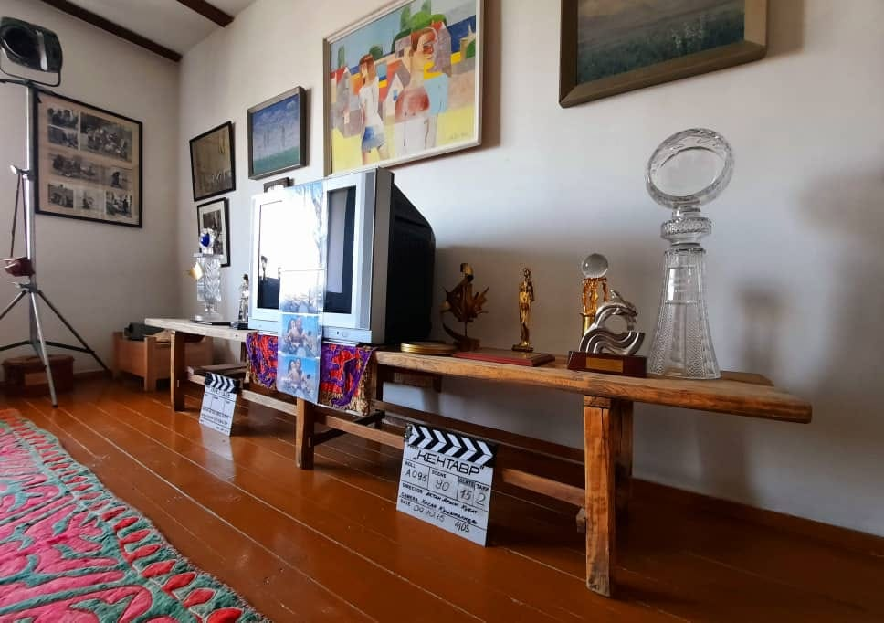

{% extends 'main/base.html' %}
{% block title %}
about
{% endblock %}
{% block content %}

"Лавка из широкой доски, на которой сейчас стоят призы, осталась от моих родителей. На ней складывали жуурканы - одеяла, одно на другое до самого потолка.
Не знаю, сколько лет мне тогда было, но ощущение, что ещё ползал. Под эту лавку закатился мой резиновый мяч, он был сине-красным, с тремя серебристо-белыми полосками посередине. Я полез доставать мяч, поранил себе шею об плохо обработанные доски. Видимо, осталась заноза и стала гноиться. Болячка была именно в том месте, где воротник, она терлась, долго не заживая. Этот случай помню черно-белым, а мяч, как предмет, причинивший мне боль, цветным.
Эту особенность памяти использовал в фильме "Бешкемпир", где дорогие мне образы озарялись цветом в чёрно-белом повествовании. Цель цветовых метаморфоз: краски, как акцент значимо важного в череде происходящего, а графика - суть истории без всяких отвлекающих факторов.
Тумар-оберег, удод, залетевший домой, бабушкины деньги на кино... Души яркий след".
{% endblock %}